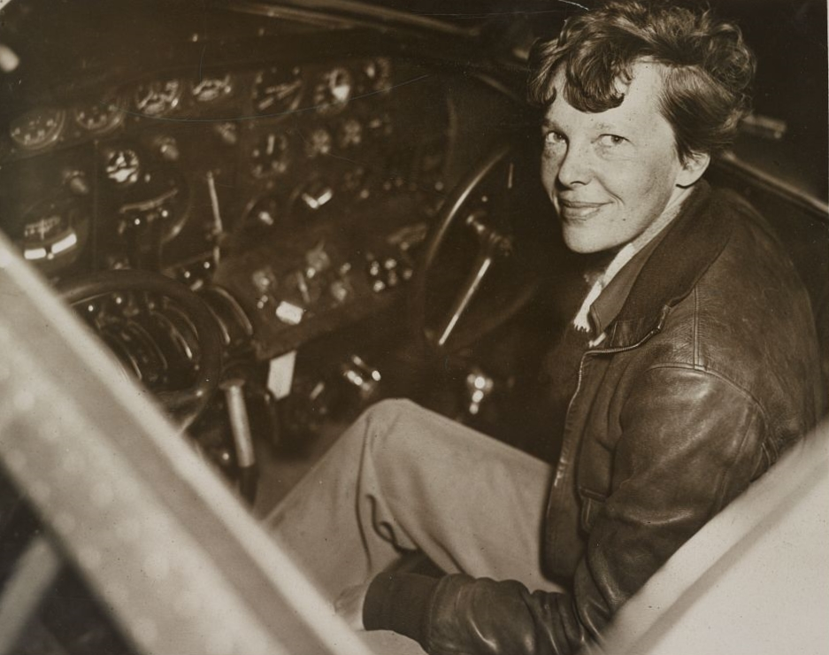

How do you locate a coral atoll barely one mile wide in the middle of two million square miles of open Pacific Ocean? You calculate fuel burn to the gallon, read the rising Sun with a sextant, and hunt for a crackling radio signal at 3105 kilocycles.
Big idea: Amelia Earhart and navigator Fred Noonan flew 22,000 miles across the equator before disappearing near Howland Island in July 1937. Their flight illustrates the razor-thin margins of aeronautical engineering, fuel mathematics, celestial navigation, and early radio direction finding.
45–60 minutes · Predict → investigate → explain
Classroom flight atlas · Original schematic
Trace the solid orange line for the 22,000 miles of successfully completed flight stages from Oakland to Lae, New Guinea. The cyan dashed line traces the fateful 2,556-mile open-ocean leg to Howland Island, highlighting the yellow 157°–337° solar line of position where Earhart transmitted her final radio messages.
ClassroomOS original illustration. Air corridors and coordinates are educational schematics based on U.S. Coast Guard and Navy search records.
01 / Before the departure
What must we know first?
Aviation’s frontier era
In the 1930s, commercial aviation was transitioning from fabric-covered biplanes to all-metal multi-engine monoplanes. Amelia Earhart was already an internationally famous aviator, having become the first woman to fly solo across the Atlantic Ocean in 1932 and solo from Honolulu to Oakland in 1935.
Her goal for 1937 was to circumnavigate Earth as close to the equator as possible: a 29,000-mile flight testing long-distance aerial navigation, aircraft endurance, and human physiology across remote continents and tropical oceans.
Known to whom?
The vast Pacific was not an empty void; Indigenous Polynesian and Micronesian navigators had crisscrossed these open waters for centuries using wave-swell reading, star paths, bird migration patterns, and cloud formations without metal instruments.
By the 1930s, the U.S. government established a tiny airstrip on Howland Island (0°48′ N, 176°38′ W)—a flat, waterless coral atoll just 1.5 miles long and 0.5 miles wide. Finding it required precision instrument navigation: a navigation error of just one degree over 2,500 miles would cause an airplane to miss the island completely.
The flight was a network of technologies
Amelia Earhart (1897–1937)
Pilot, aviation author, and women’s rights advocate. Earhart managed aircraft handling, cruise throttle settings, engine mixture leaning, and high-frequency voice radio communication from the cockpit.
Fred Noonan (1893–1937)
Master aerial navigator. Formerly Pan American Airways’ chief Pacific navigator, Noonan had pioneered the celestial navigation routes for the famous Martin M-130 "China Clipper" flying boats from California to Manila.
The Lockheed Model 10-E Electra
A customized twin-engine all-metal airliner powered by two 550-horsepower Pratt & Whitney Wasp engines. Lockheed engineers removed passenger seats to install six massive auxiliary fuel tanks inside the fuselage, expanding fuel capacity to 1,150 U.S. gallons.
USCGC Itasca & Radio Stations
The U.S. Coast Guard cutter Itasca was stationed off Howland Island, equipped with boilers emitting black smoke as a visual beacon, radio transmitters broadcasting homing signals, and a high-frequency direction finder to track the incoming plane.

Historical Portrait · Harris & Ewing, 1937
Amelia Earhart (1897–1937). Photographed shortly before her world flight attempt in 1937. Earhart served as a visiting faculty member in aeronautical engineering at Purdue University, which helped finance her Lockheed "flying laboratory."
Library of Congress / Wikimedia Commons · Public domain.
The Lockheed Model 10-E Electra (NR16020). Twin-tailed, all-metal monoplane. To fly 2,500+ miles nonstop, the aircraft carried nearly 7,000 pounds of aviation gasoline in wing and cabin tanks, operating at maximum allowable gross takeoff weight.
Purdue University Libraries / Wikimedia Commons · Public domain.
First action: Select each stage. Identify one challenge of weather, fuel, or communications that influenced the flight.
Why did the Pacific leg carry the greatest navigational risk?
No visual landmarks: Over Africa and Asia, roads, railways, coastlines, and rivers provided constant checkpoints for dead reckoning. In the central Pacific, there are no landmarks for thousands of miles.
Tiny target: Howland Island is just 1.5 miles long by 0.5 miles wide, rising only 10 to 15 feet above sea level. From an altitude of 1,000 feet, the island is visible for only about 10 to 12 miles.
Headwinds and fuel: Flying eastward into equatorial trade winds meant groundspeed was lower than airspeed, stretching flight time to nearly 20 hours and leaving little reserve fuel for searching.
Radio communication mismatch: Earhart broadcast voice messages on 3105 kHz and 6210 kHz, but lacked an operable 500 kHz Morse code transmitter that could communicate directly with merchant ships or take advantage of the Itasca’s primary direction-finding antenna.
03 / STEAM is a set of practices
The aeronautical toolkit
Science · Aerodynamics and fuel-air mixture
At high cruise altitudes, thinner air requires less fuel. By adjusting the carburetor fuel mixture from "full rich" to "lean," Earhart reduced fuel consumption from 55 gallons per hour to roughly 42 gallons per hour. Leaning too aggressively, however, risked overheating the engine cylinders and causing catastrophic engine detonation.
Technology · Radio direction finding (RDF)
A directional loop antenna rotates until a radio signal drops to a minimum volume: the null. This null reveals the exact direction of the transmitting station. If the aircraft could receive the Itasca’s radio beacon, the direction finder would point straight to Howland Island.
Engineering · Long-range fuel plumbing
Lockheed engineers plumbed six cabin fuel tanks to a central selector valve. Fuel had to be pumped in specific sequence to keep the aircraft’s center of gravity within safe aerodynamic limits. Overloaded with 1,150 gallons of gas at Lae, the Electra weighed over 14,000 pounds on takeoff.
Arts · Public communication and logbooks
Earhart was an articulate writer who cabled dispatches to the New York press from telegraph stations along the route. Her clear, direct prose inspired millions of young women to pursue careers in aviation and science.
Mathematics · Celestial navigation & lines of position
Fred Noonan used a marine bubble sextant to measure angles to the stars and sun. A celestial sight does not yield a single coordinate point; it calculates a Line of Position (LOP). At sunrise on July 2, a sun sight gave a line running northwest to southeast: precisely along 157° and 337°.
Flight lab: fuel endurance vs. headwinds
Predict: How does an unexpected 20-knot headwind affect your fuel reserve upon arriving at Howland Island?
Flight distance from Lae to Howland is 2,556 nautical miles. Total fuel loaded: 1,150 gallons.
Test: Notice that with a 15–20 knot headwind, flight duration reaches 19.5 hours, leaving less than 45 minutes of reserve fuel! Explain: Why did this leave virtually no margin to search for a hidden island if radio navigation failed?
Engineering decision: why did the radio fail to home?
The Coast Guard cutter Itasca heard Earhart’s voice loud and clear, but Earhart could not hear the Itasca’s radio signals. Choose the supported technical explanation.
04 / A strange connection between the Sun and a radio line
The 157°–337° mystery: on the line, but where?
At 07:42 and 08:43 UTC on the morning of July 2, 1937, radiomen on the USCGC Itasca recorded Earhart’s urgent voice broadcasts at maximum signal strength:
"KHAQQ calling Itasca. We must be on you, but cannot see you—but gas is running low. Been unable to reach you by radio. We are flying at 1,000 feet... We are on the line 157 337... We are running on line north and south."
Navigation lab: what is a Line of Position (LOP)?
At sunrise, navigator Fred Noonan measured the altitude of the rising Sun. A single sight proves the airplane is somewhere along a straight line perpendicular to the Sun’s direction. That line ran at a compass heading of 157° to 337°, directly intersecting Howland Island!
The fatal dilemma: Earhart knew she was on the line 157°–337°. But without an intersecting cross-bearing or two-way radio signal, she did not know if Howland Island lay 50 miles to the north (337°) or 50 miles to the south (157°)!
Flying north and south along the line was the textbook procedure to find the island. But with fuel nearly exhausted after 20 hours of flight, the Electra could not search both directions before being forced to ditch at sea.
Evidence lab: radio logs of the USCGC Itasca
Examine the transcribed radio operator logbooks from July 2, 1937.
Plot Howland Island on a coordinate grid. Draw the 157°–337° line of position through it. Mark the visual horizon circle from a 1,000-foot altitude. Separate a direct observation (“radio signal strength was 5 out of 5”) from an interpretation (“the plane must be directly overhead”).
Core challenge
Explain how two STEAM practices (such as fuel burn rate mathematics and celestial lines of position) governed the flight plan. Calculate the flight duration difference between a 15-knot headwind and calm air.
Stretch challenge
Why did the decision to leave behind the 250-foot trailing wire radio antenna (to save weight and simplify operations) critically undermine the Itasca’s high-frequency direction finder? What lessons did modern aviation safety draw from this?
History and consequences
Earhart broke barriers for women in STEM and aviation, demonstrating that technical courage and analytical navigation belong to everyone. Decades later, her flight spurred the creation of standardized radio beacons, oceanic air traffic control, and satellite GPS navigation that guarantees no airliner flies blind today.
Teacher notes and exit-ticket answers
Suggested pacing: foundations 10 min; flight journey 10 min; aerodynamics & fuel lab 15 min; line of position analysis 10 min; flight log reflection 10 min. At 2,556 nm, an airspeed of 145 kt with a 15 kt headwind gives a groundspeed of 130 kt and a 19.7-hour flight time, leaving only ~45 minutes of reserve fuel. A signal strength 5 indicates proximity (within 100–200 miles), but high-frequency radio can propagate via skywave, meaning proximity is not guaranteed.
Examine primary radio transcripts at the National Archives. Evaluate modern deep-sea sonar exploration expeditions conducted around Howland Island and Nikumaroro.